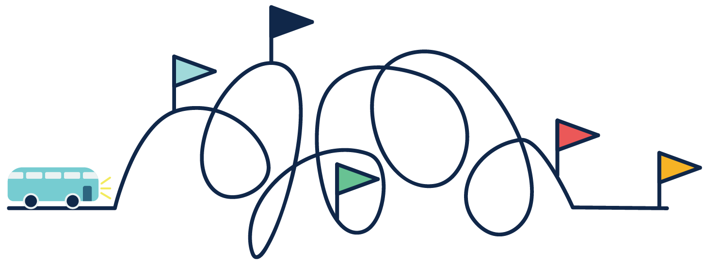
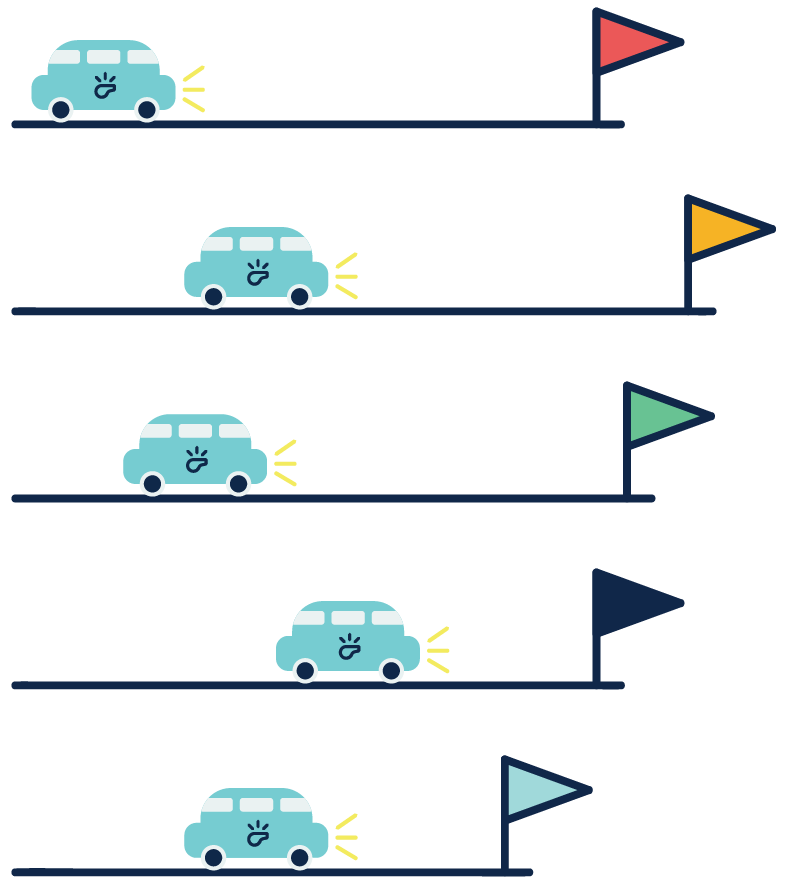
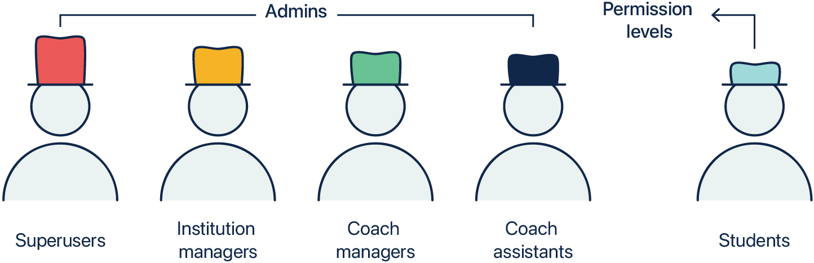
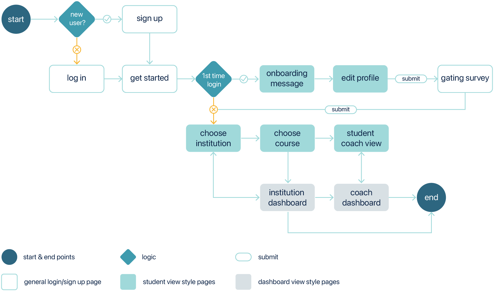
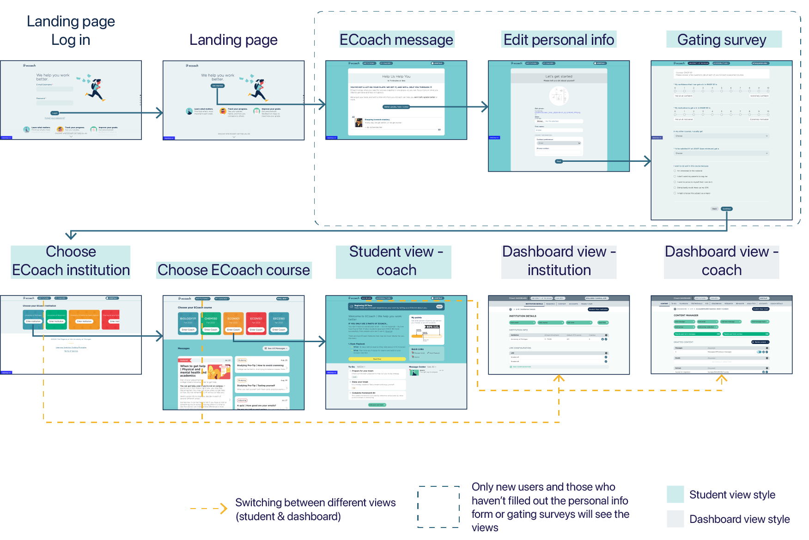
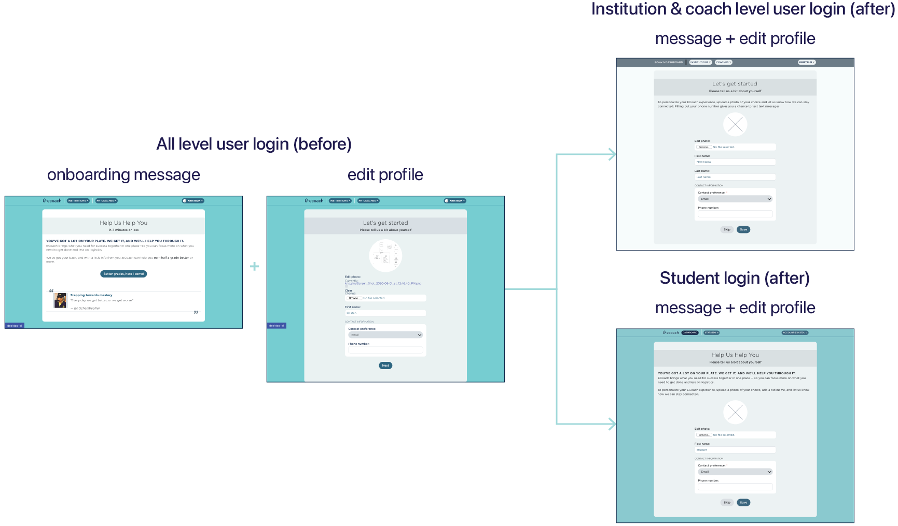
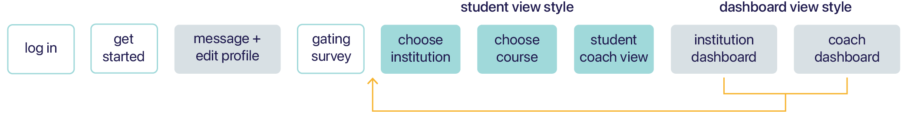
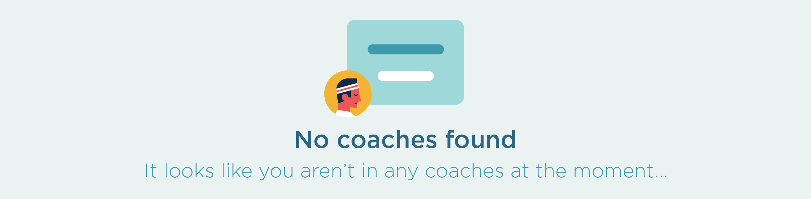
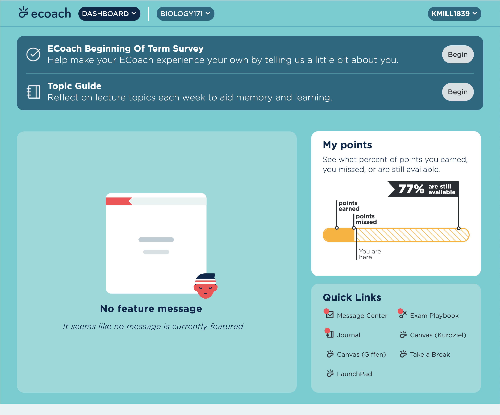

ECoach is an educational message tailoring system that strives to create highly personalized learning experiences for students in large classes. According to Professor Tim McKay, the founder of ECoach, providing “the right information, at the right time, and in the right way to his students” is what he envisioned.
Since Summer 2020, I have been working on the project team as a User Experience Design Fellow. During the time, I worked on improving login experience and strengthening brand identity in the process.
UX Design Fellow on the project from Aug 2020 - Jan 2021
Project director, UX designer, behavioral scientists, content creator
Internship @ Center for Academic Innovation, UM
In the previous login flow, all users go through similar login steps. They log in from the landing page, arrive at another landing page without sign in forms, read a welcome message, edit personal information, fill out a gating survey, and click through many more pages before getting to the one page that they are looking for.
The challenge brings me the opportunity to deep dive into how users interact with ECoach and explore ways to strengthen ECoach’s brand identity in the login/onboarding process.
Using Django as the backend server, ECoach 5 user groups with different permission levels. Among them, 4 admin types of users interact mostly with the dashboard view and the remaining 1 only interacts with the student view.
The number varies for different users and how they navigate the site for sure, but the process contains pages that are not necessary and messages that only make sense to 1 user group.
Dashboard view and student view use different color palettes, but that was not emphasized in admin login flow. Also, empty states do not follow an aligned style that strengthens brand identity.
Since the onboarding message page does not provide additional information for next steps, I merged that with the profile edit page to simplify the number of clicks. Also, to make sure both verbal and visual messages are tailored to admin and student users, I redesigned the new edit profile page with careful language updates and styles carried from the dashboard and student views.
Institution and coach level users visit the dashboard often. However, the previous flow brought them to student views first and eventually had them arrive at the dashboard view after 5-6 additional clicks. To reduce the number of clicks and steps, I moved dashboard views right after the new edit profile page so that institution and coach level users can perform tasks more efficiently.
On ECoach, most empty states are text-based but some come with illustrations. With the goal of strengthening brand identity and creating an enjoyable onboarding experience, I redesigned empty states by updating the visuals and verbal messages.
Previous empty state of coaches
Redesigned empty state for coaches
Previous empty state of featured message

Redesigned empty state for initial state
Redesigned empty state
Onboarding interaction and design might seem simple, but it is one of the best starting points to officially introduce the brand to users. Especially for large-scale projects with multiple groups of users, tailoring the onboarding experience to match different use cases and scenarios helps users more easily identify where they are at and what to expect.
Empty state itself does not carry a ton of new information. However, having a consistent tone and design style across all empty states is important. From this design challenge, I’ve also worked with my mentor and learned how to turn static design mockups to responsive features through code.